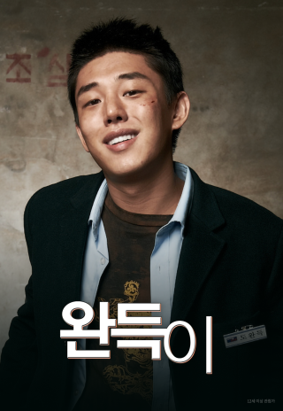

| 순위 | 제목 | 포스터 | 줄거리 | 바로가기 |
| 1 | 완득이 |  | 세상에 등돌린 소심한 반항아 ‘완득’ 세상에 반항하는 오지랖 선생 ‘똥주’ 그들의 유쾌하고 특별한 멘토링이 시작된다! | 클릭 |
| 2 | 머니볼 | 메이저리그 만년 최하위에 그나마 실력 있는 선수들은 다른 구단에 뺏기기 일수인 ‘오클랜드 애슬레틱스’. 그는 경기 데이터에만 의존해 사생활 문란, 잦은 부상, 최고령 등의 이유로 다른 구단에서 외면 받던 선수들을 팀에 합류시키고, 모두가 미친 짓이라며 그를 비난한다. 과연 빌리와 애슬레틱스 팀은 ‘머니볼’의 기적을 이룰 수 있을까? | 클릭 | |
| 3 | 써니 | 잘 나가는 남편과 예쁜 딸을 둔 나미의 삶은 무언가 2프로 부족하다. 어느 날 ‘써니짱’ 춘화와 마주친 나미는 재회의 기쁨을 나누며, ‘써니’ 멤버들을 찾아 나서기로 결심하는데… 가족에게만 매어있던 일상에서 벗어나 추억 속 친구들을 찾아나선 나미는 그 시절 눈부신 우정을 떠올리며 가장 행복했던 순간의 자신과 만나게 된다. | 클릭 | |
| 4 | 쿵푸 팬더 | 그토록 원하던 용의 전사가 되어 무적의 5인방과 함께 평화의 계곡을 지키게 된 포. 진정한 용의 전사로 거듭나기 위해 시푸 사부와 쿵푸 수련에 매진하던 중, 셴 선생이 위대한 쿵푸 사부들을 하나 둘 씩 제거하고 있다는 소식을 듣게 된다. | 클릭 | |
| 5 | 장화신은 고양이 | 슈렉이 뜨기 전에 내가 있었다! 슈렉 뺨쳤던 장화신은 고양이의 귀환! 한때는 알아주는 영웅이었지만 지금은 지명 수배자 신세인 ‘장화신은 고양이’. 명예 회복의 순간만을 꿈꾸던 그에게 악명 높은 부부 악당 ‘잭 & 질’과 ‘마법의 콩’에 대한 소문이 들려온다. | 클릭 |
이름 :
본인 취향 영화
완득이 머니볼 써니 쿵푸 팬더 장화신은 고양이